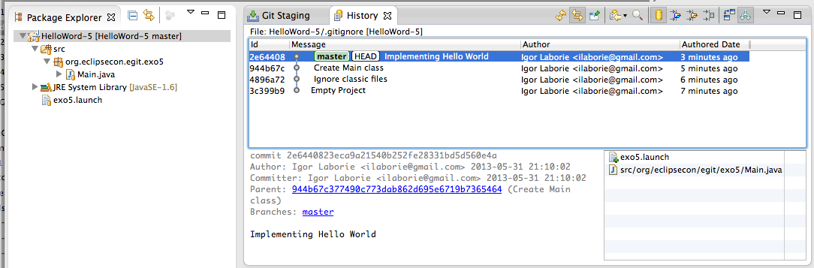
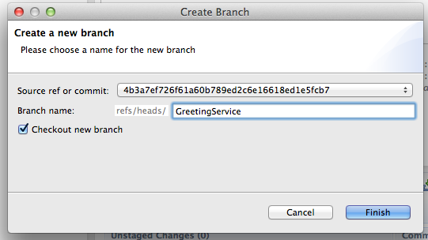
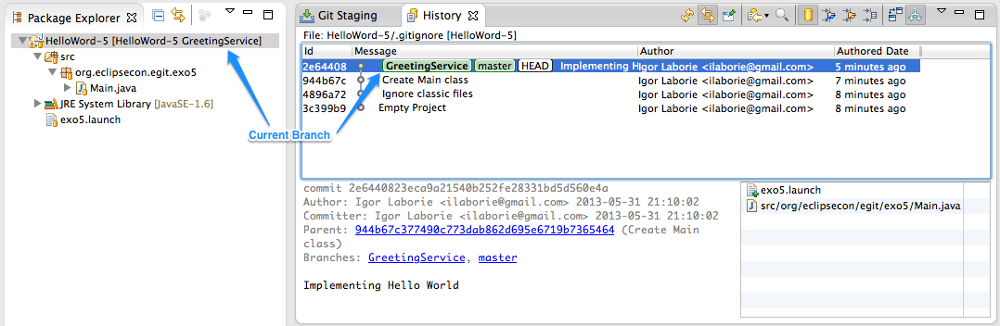

Implements a feature
-
Close opened projects and open the HelloWorld-5 project
-
Switch to Java perspective.
 -
Hint
Create the GreetingService branch.
It's always a good idea to develop your features into dedicated branches.
ChooseCreate Branch...from History contextual menu.
Or chooseTeam > Switch To > New Branch...in the Package Explorer contextual menu.
 -
The current branch is GreetingService.
 -
Create the mighty GreetingService class and
Commit.
package org.eclipsecon.egit.exo5; /** * The GreetingService class provide greeting messages */ public class GreetingService { /** * Return default greeting message * @return the greeting message */ public String greeting() { return "Hello World !"; } } -
Update main with the GreetingService and
Commit.
public static void main(String[] args) { GreetingService greetingService = new GreetingService(); System.out.println(greetingService.greeting()); } -